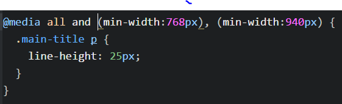

A repositor of general tips and ticks collected as I learn.
CSS tips and tricks
Media Queries for Adaptive Sites

Recources pages
- The Big Bad Guide to Flexbox - credit Skillcrush/ coding school!
Recources pages
- The Big Bad Guide to Flexbox - credit Skillcrush/ coding school!
Places to find a Remote Job
New's Sources
Articles to Good to Forget
Influential People
Anil Dash
Anil Dash is an entrepreneur, activist and writer recognized as one of the most prominent voices advocating for a more humane, inclusive and ethical technology industry. He is the CEO of Fog Creek Software, the influential independent New York tech company revered for its history of groundbreaking products including Glitch, the friendly community where anyone can discover or create the app of their dreams.
Code Resources
Learn More Code
Quotes and Thoughts
- Good class names are like comments for finding your self in the html.
Sandbox of Experiments
The Margin and Padding Percentages Test
Margin as a percentage is based on the parent element width. (see the red box with 10% margin-top)
Padding-left percentage expands the parent container and is based on parent container (see orange). Total width is increased with padding.
Padding-bottom percentage expands the parent container and is based on parent container (see yellow)
Margin-left shifts entire element (see green).
Blue box fits with width 80%, padding-left 10% and margin-left 10%.